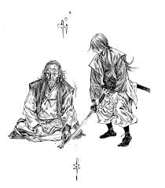

Miyamoto Musashi (宮本 武蔵) foi um dos mais lendários samurais do Japão, conhecido tanto por sua habilidade inigualável com a espada quanto por sua filosofia e sabedoria de vida. Ele viveu entre 1584 e 1645, num período turbulento da história japonesa, quando o país estava passando por guerras civis e unificação sob o xogunato Tokugawa.
⚔️ Infância e juventude
Musashi nasceu como Shinmen Takezō, em uma pequena vila no Japão feudal. Desde muito jovem, demonstrava grande talento para as artes marciais. Seu pai era um samurai e especialista em armas, o que influenciou muito sua formação.
Aos 13 anos, Musashi já havia vencido seu primeiro duelo até a morte, contra um espadachim adulto chamado Arima Kihei. A partir desse momento, embarcou numa vida de duelos e aprendizado constante, viajando pelo Japão em busca de oponentes cada vez mais fortes.
⚔️ A lenda dos 61 duelos
Musashi participou de mais de 60 duelos registrados — todos vitoriosos. Entre eles, o mais famoso foi contra Sasaki Kojirō, um respeitado espadachim que usava uma espada longa chamada monohoshi-zao ("bastão de secar roupas").
Esse duelo aconteceu em 1612, numa ilha chamada Funajima. Musashi chegou propositadamente atrasado, irritando Kojirō e desequilibrando-o emocionalmente. Lutando com um bokken (espada de madeira) que ele mesmo entalhou de um remo de barco, Musashi matou Kojirō com um só golpe.
Esse evento consolidou sua fama como o maior espadachim do Japão.
🧠 Filosofia e o estilo Niten Ichi-ryū
Musashi não era apenas um guerreiro — ele também era um filósofo, artista e estrategista. Desenvolveu seu próprio estilo de combate chamado Niten Ichi-ryū, que usava duas espadas ao mesmo tempo (katana e wakizashi). Esse estilo exigia extremo equilíbrio, força e técnica, sendo revolucionário na época.
📜 O Livro dos Cinco Anéis (Go Rin no Sho)
Nos últimos anos de sua vida, Musashi se retirou para uma caverna chamada Reigandō, onde escreveu seu tratado mais famoso:
"O Livro dos Cinco Anéis" (五輪書 - Go Rin no Sho), um manual sobre estratégia, tática e filosofia do guerreiro. O livro é dividido em cinco partes (Terra, Água, Fogo, Vento e Vazio), cada uma representando aspectos diferentes do combate e da mente do guerreiro.

🎨 Artista e mestre do espírito
Além de espadachim, Musashi era também um pintor, calígrafo e escultor, influenciado pelo zen-budismo. Suas obras refletem a busca pela simplicidade e profundidade, características do caminho do guerreiro (Bushidō).
⚰️ Morte
Musashi morreu em 1645, aos cerca de 61 anos, provavelmente de causas naturais. Ele passou seus últimos dias transmitindo ensinamentos a discípulos e refinando sua filosofia de vida.
🏯 Legado
Musashi é hoje símbolo do espírito indomável do guerreiro japonês, e seu livro é estudado até hoje por militares, empresários e praticantes de artes marciais no mundo todo. Sua vida inspira coragem, autodisciplina, foco e a busca incessante pela maestria.
